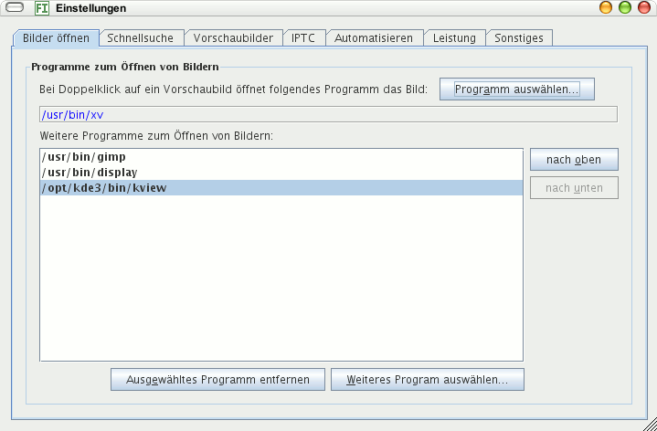

Wählen Sie ein Programm aus durch Klick auf die Schaltfläche Anwendung auswählen, das bei Doppelklick auf ein Vorschaubild die Original-Bilddatei öffnet. Das kann ein Bildbetrachter sein oder eine Bildbearbeitung.
Der Programmablauf wird protokolliert und das Protokoll in eine Logdatei geschrieben. Diese kann angezeigt werden durch Klick auf eine Schaltfläche am unteren Fensterrand. Sie ist grün, wenn alles ok ist und rot, falls Fehler auftraten. Bedeutung der Auswahl:
Wählen Sie WARNUNG, solange keine Probleme bestehen und zur Fehlerbehebung AM FEINSTEN.